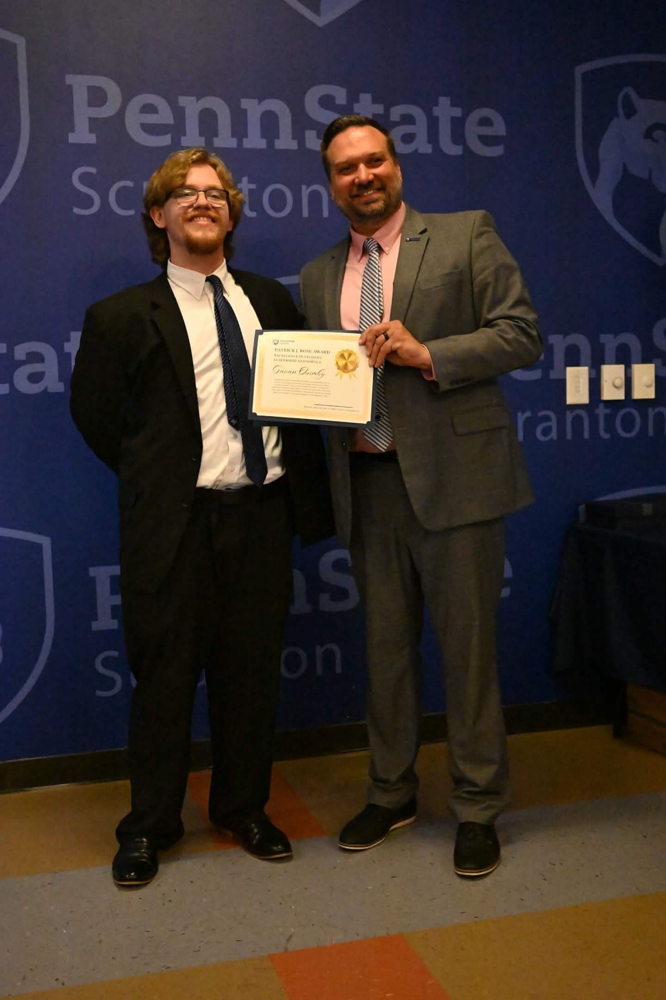

Software Tools
MS Office Suite, Adobe Creative Cloud, Microsoft Visio, Canva Pro, IntelliJ, EMC
Cybersecurity-focused IST student, student leader, and hands-on IT professional.
Leaders dont make followers, leaders make leaders
I am an Information Sciences and Technology student at Penn State with a cybersecurity focus and a business minor. My experience spans IT support, student leadership, database work, and digital content management, and I am especially interested in applying technology to solve operational and security challenges.
MS Office Suite, Adobe Creative Cloud, Microsoft Visio, Canva Pro, IntelliJ, EMC
HTML, XML, CSS, SQL Server 2008, Java, C+, C#
Codex, Claude Code, Copilot, Perplexity
